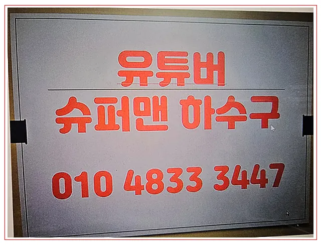
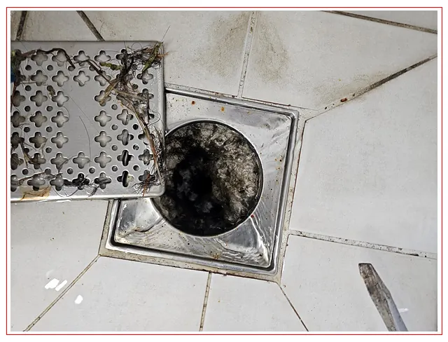
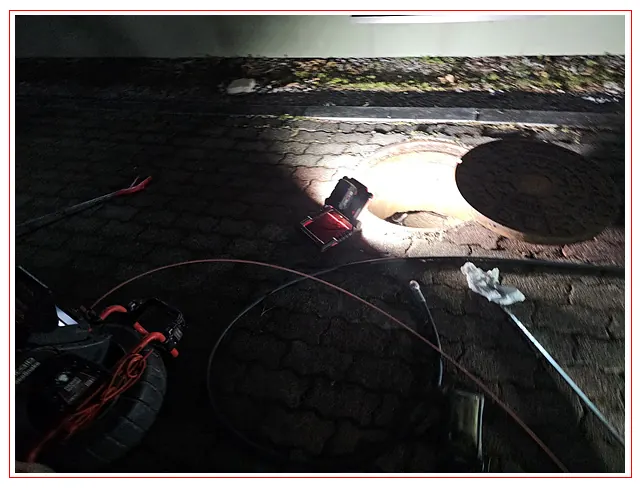
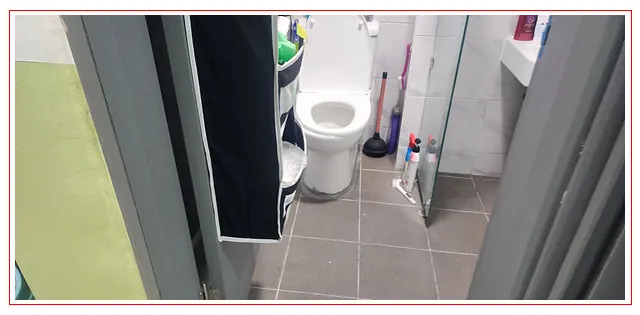

광주광산구하수구막힘
광주광산구 하수구막힘, 싱크대막힘, 변기막힘, 배관내시경, 고압세척 안내




광주 광산구 실제 시공사례
지역명만 바꾼 안내문이 아니라 실제 작업 기록과 연결합니다.
REAL CASE
광주광산구하수구막힘 3개월마다 재발한 상가 화장실싱크대역류, 원인은 따로 있었습니다
갑자기 변기가 막히거나 싱크대 물이 내려가지 않으면 생활도 영업도 큰 불편이 생깁니다. 더 답답한 건 업체를 불렀는데도 몇 달 뒤 같은 증상이 또 반복되는 상황입니다.
시공사례 자세히 보기지역 전용 안내
광주광산구 서비스 선택
SSOS V5.0 KNOWLEDGE HUB
광주 광산구 배관 지식 허브
산업시설과 대규모 주거지역이 함께 있는 광주 광산구는 공장 메인 배관, 아파트 공용 오수관과 상가 주방 배관의 막힘 원인을 서로 다른 기준으로 진단해야 합니다.
증상에서 관련 정보로 이동
건물 유형과 발생 위치를 기준으로 관련 패턴과 서비스를 확인하세요.
광주 광산구 연결 시공사례
확인된 실제 작업 기록만 개별 사례 페이지로 연결합니다.